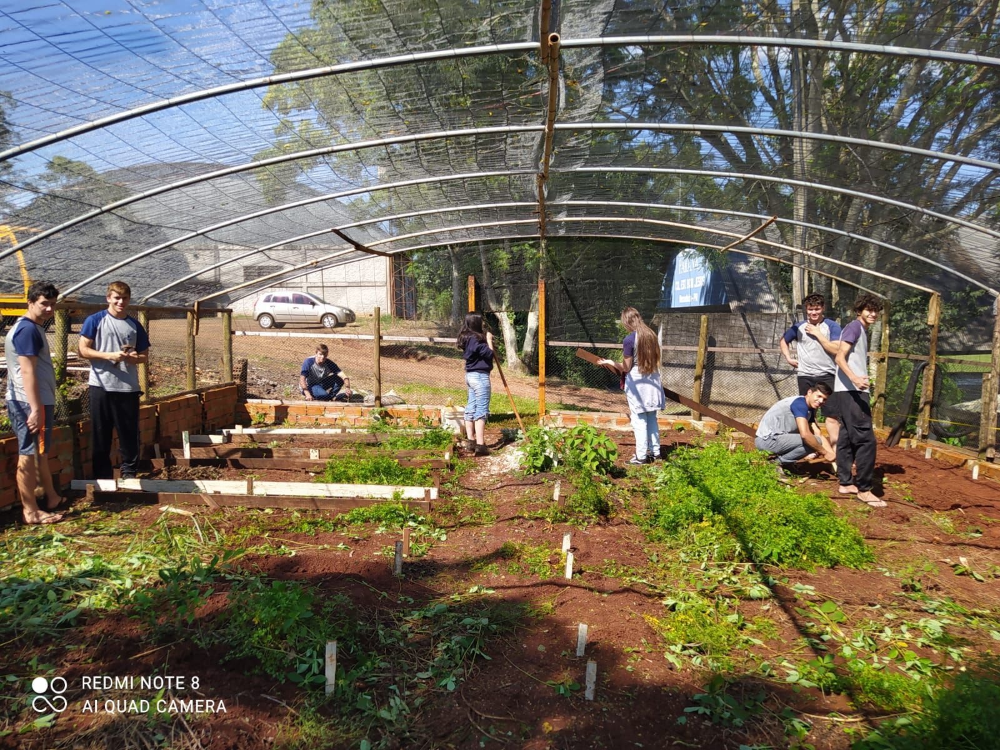
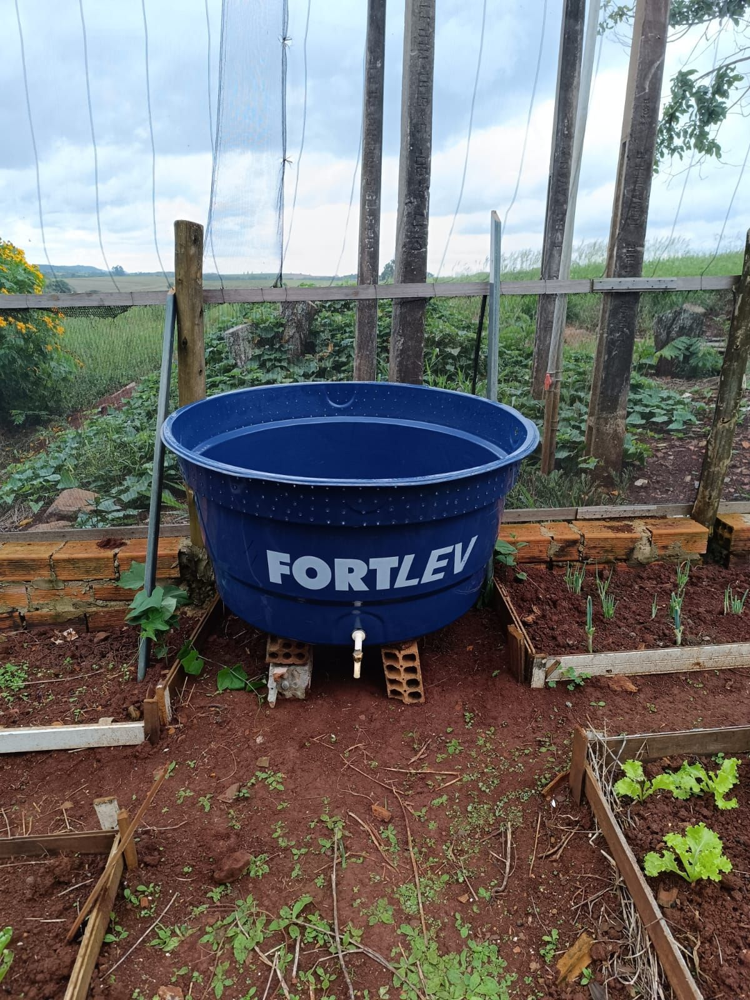

- Escola: Bom jesus
- Estudante: Kassiane P. Kunzel
A horta escolar foi realizada este ano na escola estadual do campo Bom jeusus,um projeto que envolveu alunos e professores. Em aulas diferencias conseguimos produzir o projeto da horta.

Começamos limpando a horta carpimos, e arrancamos todos os matos, depois de ter juntado os capim que ficou frochamos a terra para fazer os canteiros.

Depois de ter frochado a terra os alunos fizeram um projeto de como iria ficar direcionado os canteiros, o projeto foi feito junto com o professor de geografia que ajudou a decidir como q iria ficar o projeto.


Então logo depois foi construido os canteiros, que foi usado ripas, pregos, uma motocerra que foi utilizada pelo professor e uma trena para realizar a medida, a construção dos canteiros foi feita por duas turmas do ensino médio segunda série e primeira série.
Depois dos camteiros estarem prontos os alunos fizeram atividades em sala de aula sobre a horta.
O teste do ph foi feito pelos alunos da segunda série, foi um teste caseiro realizado com a professora de química, utilizando dois copos com a terra da horta, vinagre , bicarbonato,e água,.

ao realizar o teste, conseguimos ver que o solo estava muito acído, então fizemos pesquisas de como poderia ser adubado esse tipo de solo, logo em seguida adubamos a horta e deixamos pronto para o plantiu.
Caixa composteira é um projeto que os alunos da terceira série realizaram, essa caixa composteira foi feita com uma caixa de água, uma torneira, uma mangueirinha, e uma penera.

a caixa composteira foi feita para nossa horta escolar, com utilidade de descarte de alimentos e adubo orgânico , nela foi colocado folhas secas,minhocas e terra
Ao fazer a caixa composteira eles fizeram duas listas do que poderia ser colocado nesta caixa, e oque n poderia ser colocado.

Consulta estos recursos para obtener más información sobre la homofobia y cómo puedes ayudar a combatirla: